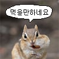

ai 영상 퀄리티 개 미쳤음
진짜 거짓말안하고
이거보고 부랄로 박수침
고화질로 보려면 아래 원본영상
ai 영상 퀄리티 개 미쳤음
진짜 거짓말안하고
이거보고 부랄로 박수침
고화질로 보려면 아래 원본영상
말포이 패트로누스는 뭘까
공식설정상 쓸수없으니....
헤리에게서 진정한 행복을 느낀 ts말포이 영애는 가능해요
수사슴 - 해리에 대한 마음을 드러내는 선택. 해리의 패트로누스와 같은 모습이 되는 거죠. 실제 설정에도 사랑으로 패트로누스가 변하는 사례가 있어서 충분히 가능한 해석입니다. 여성이라고 반드시 암사슴일 필요도 없고요.
특히 입으로는 끝까지 포터가 싫다고 우기는데, 지팡이에서 수사슴이 튀어나와 속마음을 들켜 버리는 장면이 TS 말포이에게 잘 어울릴 것 같습니다.
챗지피티한테 물어보니 이렇게 대답하넹
TS 말포이 영애라는 매력적인 설정을 바탕으로 패트로누스를 상상해 본다면, 그녀의 도도한 귀족 아가씨(영애) 면모와 원작 말포이의 유약하고 입체적인 서사를 반영한 네 가지 형태를 떠올려 볼 수 있습니다.
팬픽션과 창작 세계관에서 TS 말포이 영애의 수호신으로 가장 잘 어울리는 동물들을 정리해 드립니다.
1. 백사 (White Snake) — 슬리데린의 정체성과 순수혈통 영애
슬리데린을 상징하는 뱀 중에서, 말포이 가문의 상징인 백금발과 하얀 피부를 닮은 아름답고 치명적인 백사입니다.
• 의미: 겉으로는 가문의 명예와 슬리데린의 정체성을 완벽하게 대변하는 도도한 영애의 모습입니다. 하지만 다리가 없어 유약하고, 허물을 벗으며 성장해야 하는 뱀의 생태처럼 내면의 고뇌와 변화를 암시합니다.
2. 백공작 (White Peacock) — 오만함 뒤에 숨겨진 화려한 감옥
실제 원작에서 말포이 저택(말포이 매너)의 정원에 유유히 거닐던 동물인 백공작입니다.
• 의미: 마법 세계 최고 귀족 가문의 영애로서 가지는 오만함, 화려함, 그리고 타인의 시선을 의식하는 과시욕을 뜻합니다. 동시에 날지 못하고 아름다운 저택 마당에 갇혀 지내야 하는, 볼드모트와 가문의 압박에 시달리는 그녀의 '화려한 감옥' 같은 운명을 상징하기도 합니다.
3. 은여우 (Silver Fox) — 영리함과 고독한 츤데레
얼음처럼 차가운 외모 뒤에 영악함과 경계심을 숨긴 은여우입니다.
• 의미: 겉으로는 해리나 헤르미온느에게 날을 세우며 독설을 내뱉지만(츤데레), 속으로는 상처받기 쉽고 겁이 많은 내면을 보호하기 위해 꾀를 내는 영리한 영애의 성격과 잘 맞아떨어집니다.
4. 암사슴 (Doe) 또는 수사슴 (Stag) — 해리 포터와의 로맨스 (TS 한정)
만약 2차 창작에서 해리 포터와 깊은 연인 관계로 발전하거나, 그를 향한 감정이 그녀의 영혼을 구원하는 서사라면 패트로누스가 바뀔 수 있습니다.
• 의미: 해리의 패트로누스인 수사슴과 짝을 이루는 암사슴으로 변하거나, 혹은 해리를 너무나 갈망한 나머지 그와 똑같은 수사슴이 발현되는 형태입니다. (원작에서 스네이프가 릴리를 사랑해 암사슴이 되었듯, 해리를 향한 지독한 사랑과 구원의 서사를 완성하는 로맨틱한 설정입니다.)
족제비
공작영애라 공작

먼가 국산 극장판 개봉하는 애니영화같네
익스펙토페트로눔

페이트 기반으로 만들어진 애니인거 같은디 ㅋㅋㅋㅋㅋ
나도 딱 보면서 그 생각함 ㅎㅎㅎ
저, 할머니가 되어버려요?
kizuna 브금 깔리면서 영령좌로 돌아가는 TS말포이(캐스터, 5성, 11월 픽업)
성우도 탑급 아니면 따이겠네
이럴수가
공작영애였단 말인가
악역영애 말포이
부랄박수소리 녹음좀
악역공녀 말포이
드라코니아는 좀 아쉽다 카리나 말포이가 좋은데 나는
이게 애니 산업에 활력을 불어줄까
아니면 반대로...
산업혁명이 공업을 망친건 아니였지
어... 표정은 겁나 비장하게 외칠 거 같은데 목소리는 차분해서 순단 당황했네
연출은 솔직히 개구린데
초저예산 애니급은 되네 이제
이거 AI로 만든거임?
이제 저예산 애니는 그냥 바르네
페트로누스가 왜 숫사슴이 아닌건데?


와 유리공작!!
글쓴이는 불알박수영상을 ai로올려라
말포이한테서 뻗어나가는 무수한 정자세례...